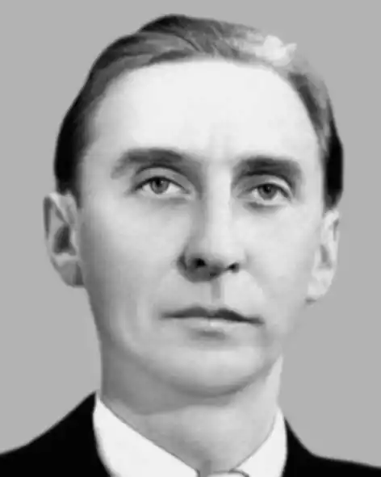

Народився 4 березня 1923 року в Києві в сім'ї службовця. У 1941 році після закінчення десятирічки поступив у Тбіліське авіаційне училище. Учасник німецько-радянської війни. Воював на різних фронтах до її кінця, нагороджений медалями.
Після демобілізації вступив на філологічний факультет Київського державного університету імені Тараса Шевченка, а після його закінчення в 1951 році працював учителем української мови та літератури в Бережанському педагогічному училищі на Тернопільщині, потім — в дитячій редакції Українського радіо, у видавництві "Веселка".
Мешкав у Києві. Помер після важкої хвороби 11 жовтня 1966 року. Творчість: Перші вірші з'явилися у фронтовій пресі, у студентські роки друкувався у газеті. Олег Буцень — перший редактор-упорядник календаря "Дванадцять місяців", що почав виходити у Дитвидаві з 1958 року. Писав оповідання про дітей і для дітей. Оповідання звучали по радіо. Друкувалися в журналах "Малятко", "Барвінок", у московських альманахах "Звездочка", "Круглый год". Переважна більшість книжок Олега Буценя випущена видавництвом "Веселка". Це зокрема збірки оповідань для малят: "Що розповів калачик" (1959); "З ранку до вечора" (1961); "Так чи не так" (1962, 1979, 1983); "Город узимку" (1963, 1969, 1988); "Не варто ображатись" (1964); "Солодкий дощ" (1965); "Наше відкриття" (1967, 1972, 1977); "Перші канікули" (1973); "Підйомний кран" (1988). Окремі твори друкувалися в щорічниках "Календарик-дошколярик", у збірниках "Перший раз — у перший клас" (1986), "Веселі пригоди" (1985, 1986), "Слово до слова — весела розмова" (1994, 2002).